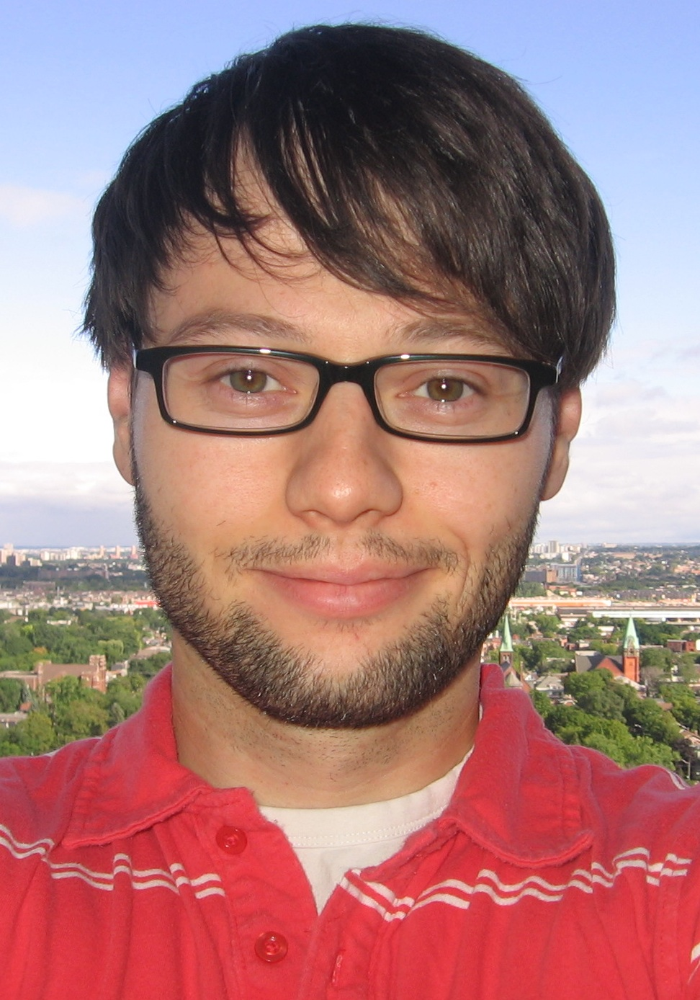

Hugo Larochelle
Research Scientist at Twitter
Associate Professor (on leave)
Département d'informatique
Université de
Sherbrooke
Email: hugo[dot]larochelle[at]usherbrooke[dot]ca
Twitter: @hugo_larochelle
Phone: (819) 821-8000 # 66121
Fax: (819) 821-8200
Office: D4-1024-1
Address: 2500 boul. de l'Université, Sherbrooke (QC), Canada, J1K 2R1
|
 |
Research interests
My research focuses
on
machine
learning, i.e. in the development of algorithms
capable of extracting concepts and abstractions from data.
I'm particularly interested in deep neural networks,
mostly applied in the context of big data and to
artificial intelligence problems such as computer vision
and natural language processing.
More specifically, my research mainly addresses the following topics:
- Tasks: supervised, semi-supervised and unsupervised learning,
structured output prediction, ranking, density estimation;
- Models: deep learning, neural networks, autoencoders,
Boltzmann machines, Markov random fields;
- Applications: object recognition and
tracking, document classification, information
retrieval;
Students
Mini-CV
Before joining the Computer Science department
of
Université de
Sherbrooke, I spent two years in
the
machine
learning group
at
University of
Toronto, where I was a postdoctoral fellow under the supervision of
Geoffrey
Hinton.
I obtained my Ph.D. in Computer Science at
Université de
Montréal, under the supervision of
professor
Yoshua
Bengio. I also did my undergrad at Université de Montréal,
in Mathematics and Computer Science.
My complete CV can be found
here.